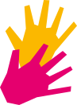
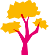
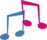
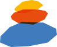
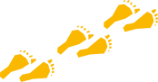
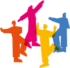

Partecipa
Anche tu fai il Moon.
Si partecipa in tanti modi: proponendo, costruendo, ospitando, camminando. O semplicemente venendo.
PartecipaMoon LabUna residenza gratuita per costruire il festival, dal 27 agosto al 7 settembre 2027. PartecipaProponi un laboratorioHai un laboratorio da condividere? Raccontaci cosa vorresti costruire.
PartecipaProponi un laboratorioHai un laboratorio da condividere? Raccontaci cosa vorresti costruire. PartecipaApri la tua cantinaQuello che non usi può diventare un mondo.
PartecipaApri la tua cantinaQuello che non usi può diventare un mondo. PartecipaMoon WalkCamminate collettive fino al festival.
PartecipaMoon WalkCamminate collettive fino al festival.

PartecipaVolontar* del festivalTre giorni dentro il festival, il 3, 4 e 5 settembre 2027.
PartecipaCall artist*Cerchiamo proposte capaci di incontrare davvero il borgo.
PartecipaInstallazioniOpere già nate, nuovi luoghi da abitare.PartecipaProponi un laboratorioHai un laboratorio da condividere? Raccontaci cosa vorresti costruire.PartecipaApri la tua cantinaQuello che non usi può diventare un mondo.
PartecipaAdotta un artistaUna stanza libera. Un incontro in più.PartecipaMoon WalkCamminate collettive fino al festival.
PartecipaPartecipare ai laboratoriNon serve saper fare tutto. A volte basta cominciare.
PartecipaRegistrazione al festivalL’ingresso è libero. Registrarti ci aiuta ad accoglierti meglio.Iscriviti alla newsletter di Dnart APS per ricevere aggiornamenti, call e opportunità di partecipazione.